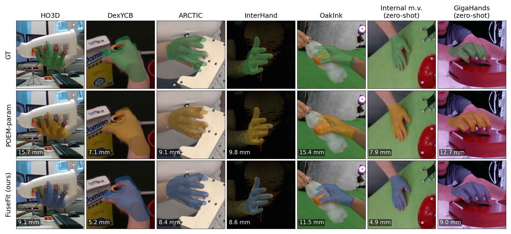

Robots that learn dexterous manipulation from human demonstrations, and teleoperation systems that track an operator's hand, often rely on 3D hand capture from calibrated multi-camera rigs. Many pretrained hand predictors are available for this, but none is reliable on every rig, and which one to trust is not known in advance. We fuse an arbitrary set of such frozen predictors, the experts, into one parametric hand mesh without retraining any of them.
FuseFit is a learned module that reads each expert's 2D keypoints, attends across experts and then across joints, and returns fused keypoints with a precision for every joint; an analytic solver then fits a MANO hand to them, trusting each joint accordingly. Because an expert enters only through its predictions, not its identity, the expert set can change at inference. Across five multi-view benchmarks and three training seeds, FuseFit is at most 0.5 mm of vertex error behind the best single expert or classical fusion rule put through the same fit, while every one of these alternatives trails by at least 1.7 mm somewhere. It beats a jointly trained parametric model on all five benchmarks, although a per-joint median of the same votes is better on two of them. On two unseen camera rigs, FuseFit beats every single expert and classical rule, and an unseen expert added at test time improves accuracy with no retraining.
ARCTIC — sequence 1. FuseFit (frozen-expert fusion + solver) vs the parametric baseline, full sequence.
DexYCB — sequence 2. FuseFit (frozen-expert fusion + solver) vs the parametric baseline, full sequence.
HO3D — sequence 0. FuseFit (frozen-expert fusion + solver) vs the parametric baseline, full sequence.
InterHand2.6M — sequence 1. FuseFit (frozen-expert fusion + solver) vs the parametric baseline, full sequence.
OakInk — sequence 0. FuseFit (frozen-expert fusion + solver) vs the parametric baseline, full sequence.
GigaHands — p008-boxing. Zero-shot on GigaHands (49-camera rig): FuseFit (fusion) vs the parametric baseline.
GigaHands — p044-dog. Zero-shot on GigaHands (49-camera rig): FuseFit (fusion) vs the parametric baseline.
Internal multi-view (anon.) — clip 1. Zero-shot on an internal multi-view set: FuseFit (fusion) vs the parametric baseline.
Robustness to a corrupted expert. A deliberately wrong expert is injected; reliability-weighted fusion stays locked on the hand while a uniform mean is dragged off.
Fusion beats every single expert. FuseFit vs each expert's 2D through the same solver: the fused result tracks below the best expert without being told which is best.
Per-joint expert reliability. Each keypoint is coloured by which expert the fusion trusts there (red = POEM, blue = WiLoR); the trust varies per joint and per frame.
Per-joint predicted uncertainty. The fused 2D keypoints with their predicted precision drawn as ellipses; uncertainty grows on occluded / hard joints.
